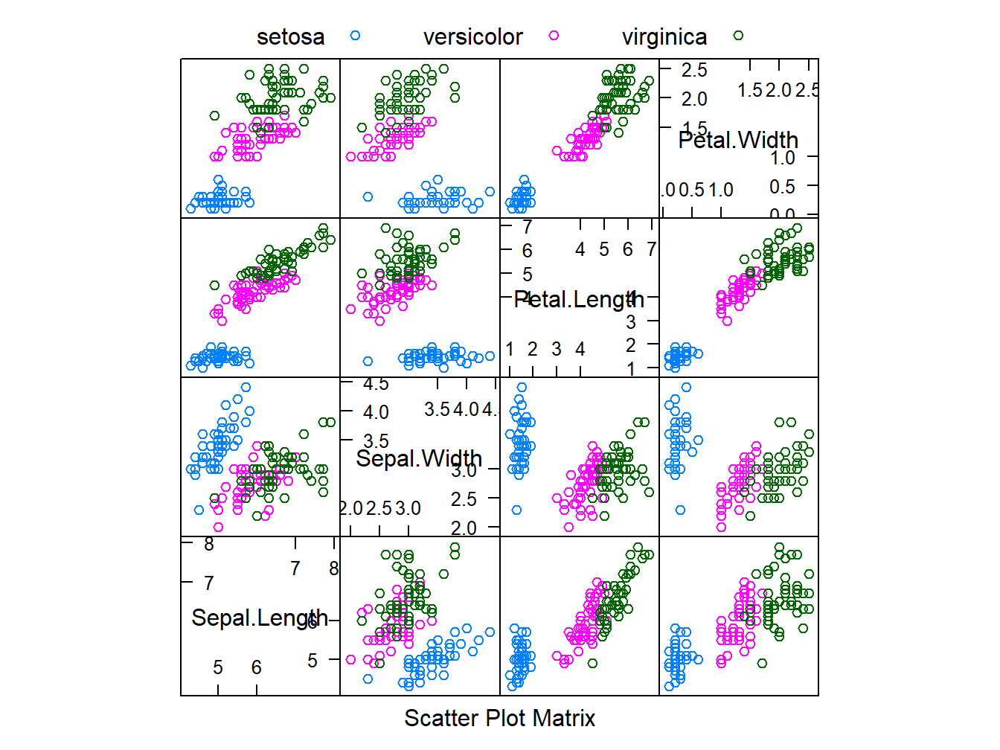
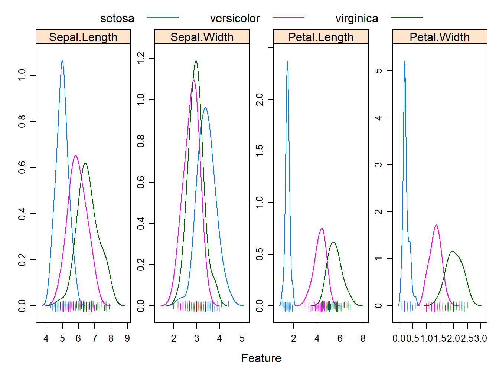

2.2 El paquete caret
El paquete caret (Classification And REgression Training) es uno de los más populares para entrenar modelos de machine learning. Contiene una interface uniforme para la mayoría de los algoritmos que se tratan en este curso y, en particular, los 3 que veremos en estas sesiones. Las ventajas del paquete son que permite hacer:
- partición de los datos
- pre-procesado de los datos
- selección de variables
- ajuste del modelo usando remuestreo
- estimación de la importancia/relevancia de las variables
Más información disponible en topepo.github.io/caret.
2.2.1 Visualización
Seguiremos con los datos iris. El paso inicial: análisis descriptivo y visualización de los datos podríamos obviarlo… pero a modo didáctico reproducimos el mismo análisis, esta vez usando la función featurePlot de caret.
## Loading required package: lattice## 'data.frame': 150 obs. of 5 variables:
## $ Sepal.Length: num 5.1 4.9 4.7 4.6 5 5.4 4.6 5 4.4 4.9 ...
## $ Sepal.Width : num 3.5 3 3.2 3.1 3.6 3.9 3.4 3.4 2.9 3.1 ...
## $ Petal.Length: num 1.4 1.4 1.3 1.5 1.4 1.7 1.4 1.5 1.4 1.5 ...
## $ Petal.Width : num 0.2 0.2 0.2 0.2 0.2 0.4 0.3 0.2 0.2 0.1 ...
## $ Species : Factor w/ 3 levels "setosa","versicolor",..: 1 1 1 1 1 1 1 1 1 1 ...Diagramas de dispersión:
featurePlot(x = iris[, 1:4],
y = iris$Species,
plot = "pairs",
## Add a key at the top
auto.key = list(columns = 3))
Densidades estimadas:
featurePlot(x = iris[, 1:4],
y = iris$Species,
plot = "density",
## Pass in options to xyplot() to
## make it prettier
scales = list(x = list(relation="free"),
y = list(relation="free")),
adjust = 1.5,
pch = "|",
layout = c(4, 1),
auto.key = list(columns = 3))
Diagramas de cajas:
featurePlot(x = iris[, 1:4],
y = iris$Species,
plot = "box",
## Pass in options to bwplot()
scales = list(y = list(relation="free"),
x = list(rot = 90)),
layout = c(4,1 ),
auto.key = list(columns = 2))
2.2.2 Clasificación con KNN
Necesitamos extraer una muestra independiente (test) para probar el modelo, una vez ajustado. Ahora usaremos la función createDataPartition, que permite hacer la partición teniendo en cuenta la variable respuesta. Esto es esencial para mantener el balance de la muestra.
# creamos una partición test
df <- iris
set.seed(123)
train.ID <- createDataPartition(df$Species, p = 0.8, list = FALSE)
train_df <- df[train.ID, ]
test_df <- df[-train.ID, ]Para ajustar el modelo usaremos la función train, que permite:
* evaluar, usando remuestreo, el efecto de distintos parámetros en la precisión del modelo
* escoger el modelo óptimo, de acuerdo a los parámetros probados
* estimar la precisión del modelo, de acuerdo a diferentes medidas
Actualmente hay uno \(\approx 238\) modelos disponibles. Nosotros empezaremos probando el knn, pero antes tenemos que especificar el método de remuestreo, usando la función trainControl. Con esta función, podemos fijar una validación cruzada k-Fold o leave-one-out (LOOCV). También están disponibles las opciones bootstrap y k-Fold repetitivo.
En este ejemplo, hemos fijado un k-Fold con 10 hojas. Además, hacemos el escalado de las variables dentro del propio algoritmo, usando la opción preProcess. Finalmente, le decimos al algoritmo que intente 10 valores diferentes para escoger el número de vecinos óptimo, usando la opción tuneLength
# primeros pasos con la validación cruzada...
fit_control <- trainControl(method='cv', number = 10)
model_knn_iris <- train(Species ~.,
data = train_df,
method = "knn",
trControl = fit_control,
preProcess = c("center", "scale"),
tuneLength = 10)
model_knn_iris## k-Nearest Neighbors
##
## 120 samples
## 4 predictor
## 3 classes: 'setosa', 'versicolor', 'virginica'
##
## Pre-processing: centered (4), scaled (4)
## Resampling: Cross-Validated (10 fold)
## Summary of sample sizes: 108, 108, 108, 108, 108, 108, ...
## Resampling results across tuning parameters:
##
## k Accuracy Kappa
## 5 0.9666667 0.9500
## 7 0.9583333 0.9375
## 9 0.9750000 0.9625
## 11 0.9583333 0.9375
## 13 0.9583333 0.9375
## 15 0.9583333 0.9375
## 17 0.9583333 0.9375
## 19 0.9416667 0.9125
## 21 0.9500000 0.9250
## 23 0.9333333 0.9000
##
## Accuracy was used to select the optimal model using the largest value.
## The final value used for the model was k = 9.
Podemos ver en el resumen el número óptimo de vecinos (entre los valores probados) del modelo final. En el gráfico, vemos cómo varía el accuracy en función del número de vecinos. La tabla de confusión y medidas de precisión para los datos test:
# hagamos las predicciones del conjunto de prueba
prediction_knn_iris <- predict(model_knn_iris, newdata = test_df)
confusionMatrix(prediction_knn_iris, reference = test_df$Species)## Confusion Matrix and Statistics
##
## Reference
## Prediction setosa versicolor virginica
## setosa 10 0 0
## versicolor 0 10 2
## virginica 0 0 8
##
## Overall Statistics
##
## Accuracy : 0.9333
## 95% CI : (0.7793, 0.9918)
## No Information Rate : 0.3333
## P-Value [Acc > NIR] : 8.747e-12
##
## Kappa : 0.9
##
## Mcnemar's Test P-Value : NA
##
## Statistics by Class:
##
## Class: setosa Class: versicolor Class: virginica
## Sensitivity 1.0000 1.0000 0.8000
## Specificity 1.0000 0.9000 1.0000
## Pos Pred Value 1.0000 0.8333 1.0000
## Neg Pred Value 1.0000 1.0000 0.9091
## Prevalence 0.3333 0.3333 0.3333
## Detection Rate 0.3333 0.3333 0.2667
## Detection Prevalence 0.3333 0.4000 0.2667
## Balanced Accuracy 1.0000 0.9500 0.9000Intentemos ahora fijar las cantidades de vecinos a probar. También cambiamos el método de remuestreo…
# definimos el grid:
some_k <- expand.grid(k = 1:15)
# k-fold CV pero con repeticiones
fit_control1 <- trainControl(
method = "repeatedcv",
number = 10, # número de folds
repeats = 5 ) # repeticiones
# bootstrap
fit_control2 <- trainControl(
method = "boot",
number = 10) # número de muestras bootstrap
# LOOCV
fit_control3 <- trainControl(
method = "LOOCV")
model2_knn_iris <- train(Species ~.,
data = train_df,
method = "knn",
trControl = fit_control2,
preProcess = c("center", "scale"),
tuneGrid = some_k)
model2_knn_iris## k-Nearest Neighbors
##
## 120 samples
## 4 predictor
## 3 classes: 'setosa', 'versicolor', 'virginica'
##
## Pre-processing: centered (4), scaled (4)
## Resampling: Bootstrapped (10 reps)
## Summary of sample sizes: 120, 120, 120, 120, 120, 120, ...
## Resampling results across tuning parameters:
##
## k Accuracy Kappa
## 1 0.9481717 0.9211545
## 2 0.9475159 0.9196833
## 3 0.9453882 0.9165257
## 4 0.9599231 0.9393154
## 5 0.9665503 0.9492382
## 6 0.9686637 0.9524826
## 7 0.9688968 0.9528083
## 8 0.9596084 0.9388259
## 9 0.9647549 0.9465745
## 10 0.9600366 0.9392605
## 11 0.9624756 0.9431153
## 12 0.9555270 0.9326274
## 13 0.9623479 0.9429620
## 14 0.9439143 0.9151811
## 15 0.9438559 0.9150458
##
## Accuracy was used to select the optimal model using the largest value.
## The final value used for the model was k = 7.
# hagamos las predicciones del conjunto de prueba
prediction_knn_iris2 <- predict(model2_knn_iris, newdata = test_df)
confusionMatrix(prediction_knn_iris2, reference = test_df$Species)## Confusion Matrix and Statistics
##
## Reference
## Prediction setosa versicolor virginica
## setosa 10 0 0
## versicolor 0 10 2
## virginica 0 0 8
##
## Overall Statistics
##
## Accuracy : 0.9333
## 95% CI : (0.7793, 0.9918)
## No Information Rate : 0.3333
## P-Value [Acc > NIR] : 8.747e-12
##
## Kappa : 0.9
##
## Mcnemar's Test P-Value : NA
##
## Statistics by Class:
##
## Class: setosa Class: versicolor Class: virginica
## Sensitivity 1.0000 1.0000 0.8000
## Specificity 1.0000 0.9000 1.0000
## Pos Pred Value 1.0000 0.8333 1.0000
## Neg Pred Value 1.0000 1.0000 0.9091
## Prevalence 0.3333 0.3333 0.3333
## Detection Rate 0.3333 0.3333 0.2667
## Detection Prevalence 0.3333 0.4000 0.2667
## Balanced Accuracy 1.0000 0.9500 0.90002.2.3 Importancia de las variables
Para KNN no tenemos un método que permita determinar la relevancia de cada predictor. Por ejemplo, en mínimos cuadrados, sí se puede conducir un test para determinar si cada coeficiente \(\beta_i\) del modelo es significativamente distinto de cero. Aún así, caret incorpora la función varImp que da una medida de importancia de cada predictor del problema de clasificación o regresión.
## ROC curve variable importance
##
## variables are sorted by maximum importance across the classes
## setosa versicolor virginica
## Petal.Width 100.00 100.00 100.0
## Petal.Length 100.00 100.00 100.0
## Sepal.Length 90.80 72.07 90.8
## Sepal.Width 56.32 56.32 0.0Aunque esto no debe usarse como método de selección de variables, sí motiva el estudio del problema al disminuir la dimensión \(p = 4\). Por ejemplo, veamos la precisión del modelo al dejar solo Petal.Length y Petal.Width.
# seleccionamos los predictores que queremos y la respuesta
df_petal <- iris[,c("Petal.Length", "Petal.Width", "Species")]
train_df_petal <- df_petal[train.ID, ]
test_df_petal <- df_petal[-train.ID, ]
# el modelo...
fit_control <- trainControl(method='cv', number = 10)
model_knn_petal <- train(Species ~.,
data = train_df_petal,
method = "knn",
trControl = fit_control,
preProcess = c("center", "scale"),
tuneLength = 20)
model_knn_petal## k-Nearest Neighbors
##
## 120 samples
## 2 predictor
## 3 classes: 'setosa', 'versicolor', 'virginica'
##
## Pre-processing: centered (2), scaled (2)
## Resampling: Cross-Validated (10 fold)
## Summary of sample sizes: 108, 108, 108, 108, 108, 108, ...
## Resampling results across tuning parameters:
##
## k Accuracy Kappa
## 5 0.9666667 0.9500
## 7 0.9666667 0.9500
## 9 0.9666667 0.9500
## 11 0.9666667 0.9500
## 13 0.9666667 0.9500
## 15 0.9666667 0.9500
## 17 0.9583333 0.9375
## 19 0.9666667 0.9500
## 21 0.9583333 0.9375
## 23 0.9666667 0.9500
## 25 0.9666667 0.9500
## 27 0.9666667 0.9500
## 29 0.9666667 0.9500
## 31 0.9666667 0.9500
## 33 0.9750000 0.9625
## 35 0.9833333 0.9750
## 37 0.9750000 0.9625
## 39 0.9833333 0.9750
## 41 0.9750000 0.9625
## 43 0.9666667 0.9500
##
## Accuracy was used to select the optimal model using the largest value.
## The final value used for the model was k = 39.
# hagamos las predicciones del conjunto de prueba
prediction_knn_petal <- predict(model_knn_petal, newdata = test_df_petal)
confusionMatrix(prediction_knn_petal, reference = test_df_petal$Species)## Confusion Matrix and Statistics
##
## Reference
## Prediction setosa versicolor virginica
## setosa 10 0 0
## versicolor 0 10 3
## virginica 0 0 7
##
## Overall Statistics
##
## Accuracy : 0.9
## 95% CI : (0.7347, 0.9789)
## No Information Rate : 0.3333
## P-Value [Acc > NIR] : 1.665e-10
##
## Kappa : 0.85
##
## Mcnemar's Test P-Value : NA
##
## Statistics by Class:
##
## Class: setosa Class: versicolor Class: virginica
## Sensitivity 1.0000 1.0000 0.7000
## Specificity 1.0000 0.8500 1.0000
## Pos Pred Value 1.0000 0.7692 1.0000
## Neg Pred Value 1.0000 1.0000 0.8696
## Prevalence 0.3333 0.3333 0.3333
## Detection Rate 0.3333 0.3333 0.2333
## Detection Prevalence 0.3333 0.4333 0.2333
## Balanced Accuracy 1.0000 0.9250 0.8500Pero, ¿cómo visualizar las fronteras de decisión del método? Ahora que \(p = 2\), podemos representar esto en el plano usando la siguiente función:
decision_bound = function(train_df_in, test_df_in, model_in){
# plot decision boundary for iris[,c("Petal.Length", "Petal.Width", "Species")]
require(MASS)
require(caret)
require(ggplot2)
require(gridExtra)
# Paso 1: crear un grid de valores desde min a max de ambos predictores
pl = seq(min(train_df_in$Petal.Length), max(train_df_in$Petal.Length), length.out = 80)
pw = seq(min(train_df_in$Petal.Width), max(train_df_in$Petal.Width), length.out = 80)
lgrid <- expand.grid(Petal.Length=pl, Petal.Width=pw)
# Paso 2: obtener las predicciones tanto para el grid como para el test
modelPredGrid <- predict(model_in, newdata=lgrid)
train_df_in$Pred.Class <- predict(model_in, newdata = train_df_in)
test_df_in$Pred.Class <- predict(model_in, newdata = test_df_in)
# Paso 3: ggplot con la funcion contour
gg1 <- ggplot(data=lgrid) +
stat_contour(aes(x=Petal.Length, y=Petal.Width, z=as.numeric(modelPredGrid)), bins=2) +
geom_point(aes(x=Petal.Length, y=Petal.Width, colour=modelPredGrid), alpha=0.1) +
labs(colour = "Clases") + ggtitle("Train") +
geom_point(data=train_df_in,
aes(x=Petal.Length, y=Petal.Width,
colour=Species), size=5, shape=1) +
theme_light()
gg2 <- ggplot(data=lgrid) +
stat_contour(aes(x=Petal.Length, y=Petal.Width, z=as.numeric(modelPredGrid)), bins=2) +
geom_point(aes(x=Petal.Length, y=Petal.Width, colour=modelPredGrid), alpha=0.1) +
labs(colour = "Clases") + ggtitle("Test") +
geom_point(data=test_df_in,
aes(x=Petal.Length, y=Petal.Width,
colour=Species), size=5, shape=1) +
theme_light()
grid.arrange(gg1, gg2, ncol=1, nrow=2)
}Así que aplicando esto a nuestros datos de entrenamiento (o los del test) obtenemos las fronteras de decisión:
# fronteras de decisión, usando la nueva función
decision_bound(train_df_petal, test_df_petal, model_knn_petal)## Loading required package: MASS## Loading required package: gridExtra